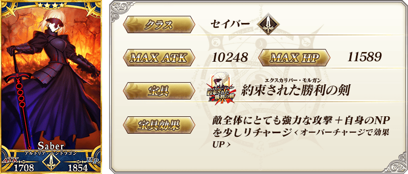
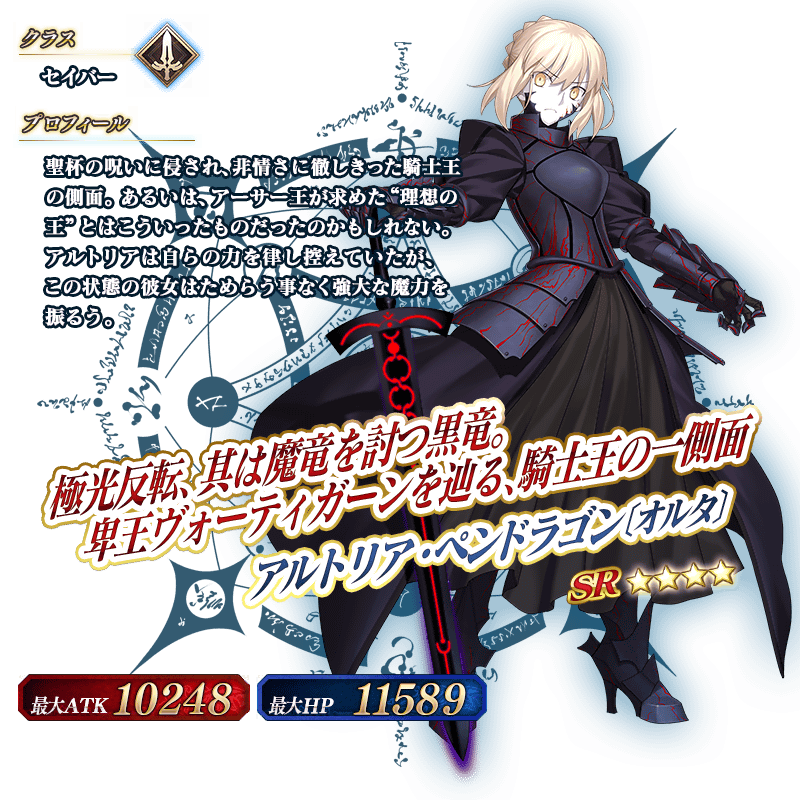
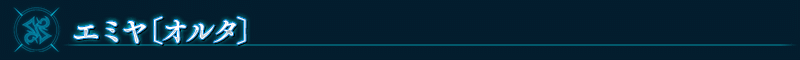
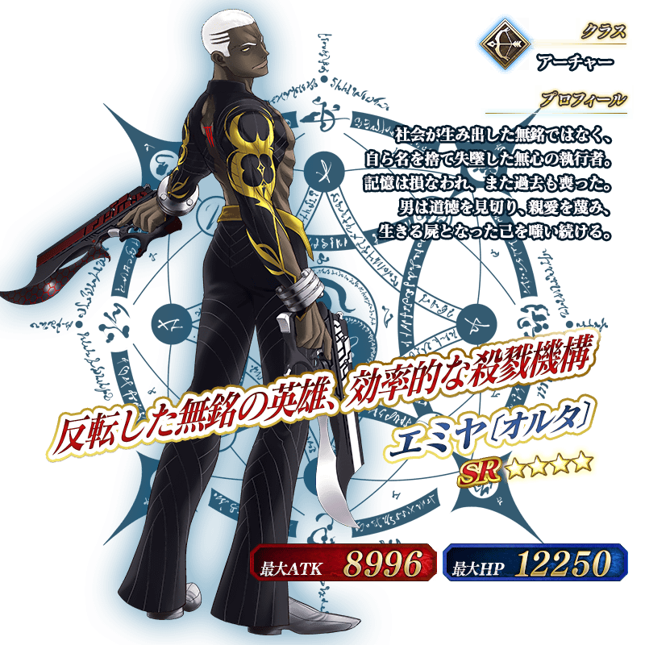

◆「新宿Pick Up2召喚」期間◆
期間：2017年3月1日(三) 16:00～3月8日(三) 13:59
期間限定舉辦「新宿Pick Up2召喚」！
※未到達亞種特異點Ⅰ的狀態也能進行新宿Pick Up2召喚。
從在「亞種特異點Ⅰ 惡性隔絕魔境 新宿 新宿幻靈事件」活躍的Servant，這次是「★4(SR)阿爾托莉亞・潘德拉剛〔Alter〕(Saber)」「★4(SR)Emiya〔Alter〕」Pick Up！
詳情請在聖晶石召喚畫面左下的召喚詳細確認。
Pick Up期間中，Pick UpServant的出現機率提升！
10次召喚中確定1張★4(SR)以上和確定1位★3(R)以上的Servant！
※確定★4(SR)以上包含Servant和概念禮裝。
※所謂「出現機率提升」意指比同稀有度的Servant出現機率更高的設定。






